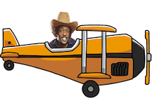
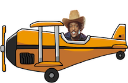

THE GAP BAND
charlie wilson

When was the Gap Band founded and where?
How was it working with your brothers, Robert and Ronnie Wilson?
What made you decide to leave the band in 1992? Do you regret leaving?
Do you feel that the life you were living had an impact on your musical career?
You seem very open to incorporating modern sounds into your work.
I read that you had prostate cancer, are you still battling that today or have you recovered?
Are you a jazz fan?
How does it feel to have won a BET lifetime achievement award?
Do you feel your age has held you back or caused problems today in your life?
There's a rumor that you're Snoop Doggs uncle, is that true?
I read that you used to have a drug addiction, how was that time in your life?
